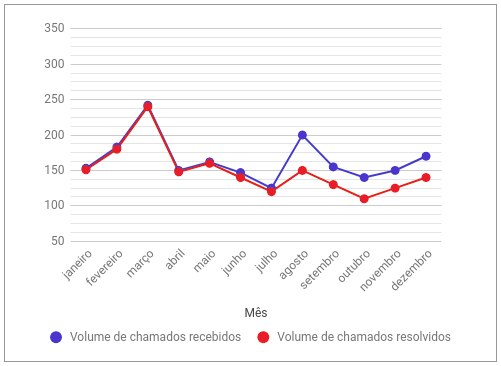

<div class="conteiner">

    <div class="sub-conteiner">
        <div fxLayout="row wrap" class="header">
            <div fxFlex="50" fxFill fxLayoutAlingn="start center" class="tile">
                <h1>Top Produtos</h1>
                <h3>Os mais pesquisados</h3>
            </div>
            <div fxFlex="50" fxFill fxLayoutAlingn="start center" class="date">
                <mat-form-field appearance="fill">
                    <mat-label>Enter a date range</mat-label>
                    <mat-date-range-input [rangePicker]="picker">
                      <input matStartDate placeholder="Start date">
                      <input matEndDate placeholder="End date">
                    </mat-date-range-input>
                    <mat-hint>MM/DD/YYYY – MM/DD/YYYY</mat-hint>
                    <mat-datepicker-toggle matIconSuffix [for]="picker"></mat-datepicker-toggle>
                    <mat-date-range-picker #picker></mat-date-range-picker>
                  </mat-form-field>
            </div>
        </div>
        
        <ul>
            <li *ngFor="let produto of produtos" class="lista">
                <span class="li-produtos">Produto: {{produto.nome}}</span> - 
                <span class="li-acesso">Acesso: {{produto.acesso}}</span>
            </li>
        </ul>
    </div>
    <div class="esp"></div>

    <div class="sub-conteiner">
        
    </div>
    
</div>